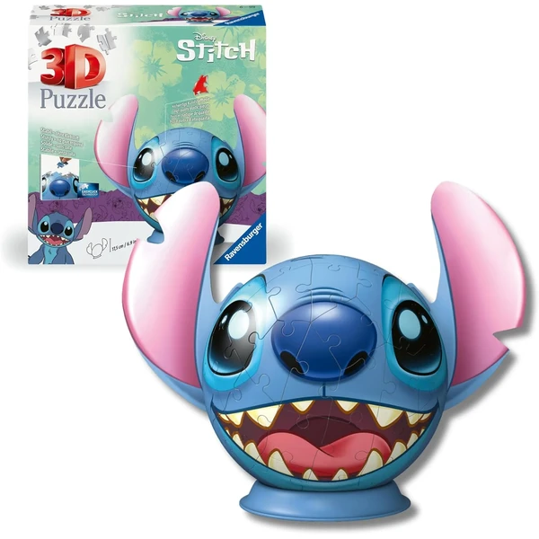
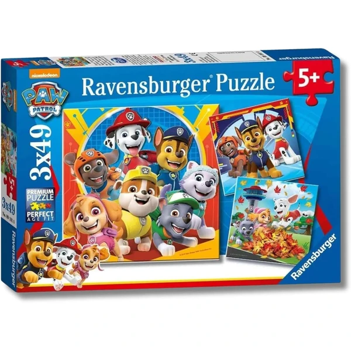
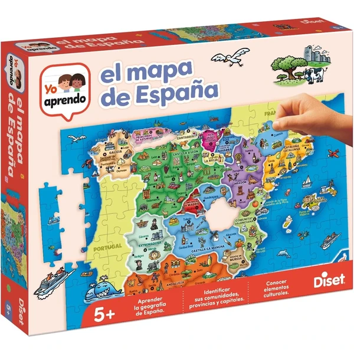
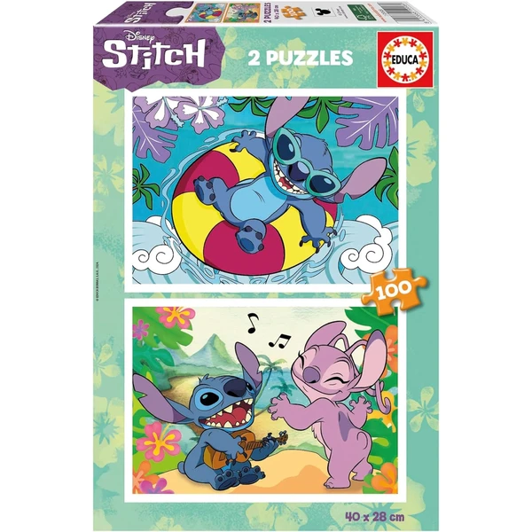
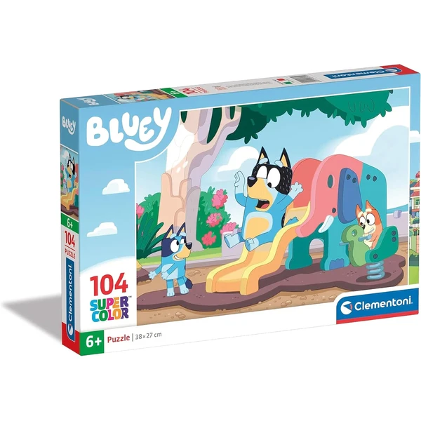
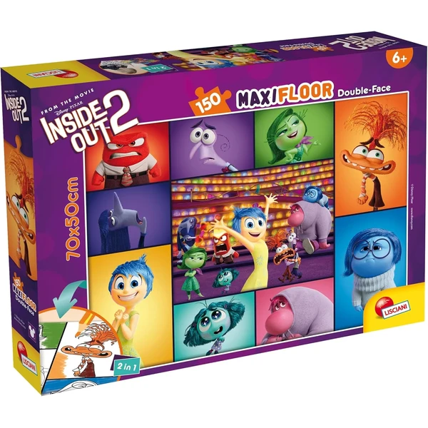
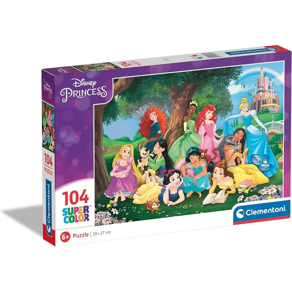

Ravensburger Minecraft Puzzle XXL
Un puzzle de 100 piezas con temática Minecraft, que desarrolla motricidad fina y concentración. Incluye póster de referencia y tecnología Soft-Click para un encaje perfecto. Medidas: 36 x 49 cm.
⭐ ¿Por qué nos gusta?
- ✔ 100 piezas XXL de tamaño cómodo para manejar.
- ✔ Tecnología Soft-Click para encajes perfectos.
- ✔ Temática Minecraft muy popular entre los niños.
💬 Lo que más destacan las familias
Muchos padres coinciden en que las piezas grandes hacen el montaje mucho más cómodo, sin la frustración de piezas diminutas que se pierden. También se comenta que el encaje se nota firme y preciso, así que el resultado aguanta bien una vez terminado.
Ver en Amazon

Educa Puzzles Progresivos Disney Pixar
Pack de 4 puzzles (50, 80, 100 y 150 piezas) con personajes de Disney y Pixar. Ideal para que los niños avancen progresivamente en dificultad, desarrollando concentración y memoria visual de forma gradual.
⭐ ¿Por qué nos gusta?
- ✔ Cuatro niveles de dificultad en un pack.
- ✔ Permite avanzar según el nivel del niño.
- ✔ Personajes queridos de películas clásicas.
💬 Lo que más destacan las familias
Los compradores valoran especialmente poder empezar por el puzzle más sencillo e ir subiendo de nivel según coge confianza. También se comenta que tener varias películas en el mismo pack evita que se cansen de montar siempre la misma escena.
Ver en Amazon

Ravensburger Puzzle 3D Stitch con Orejas
Un puzzle 3D de 77 piezas que forma la figura de Stitch (de Lilo y Stitch) como objeto decorativo. Las piezas están numeradas para facilitar el montaje, y se ensamblan sin necesidad de pegamento, creando una pieza articulada completa.
⭐ ¿Por qué nos gusta?
- ✔ Puzzle 3D que se convierte en decoración.
- ✔ Piezas numeradas para montaje guiado.
- ✔ Personaje icónico muy querido por los niños.
💬 Lo que más destacan las familias
Una de las cosas más comentadas es la satisfacción de ver la figura terminada, que muchos acaban dejando de adorno una vez montada. También se valora que las piezas numeradas guíen el proceso, así se puede completar sin ayuda de un adulto.
Ver en Amazon

Ravensburger Patrulla Canina 3x49 Piezas
Pack de 3 puzzles de 49 piezas cada uno con temática Patrulla Canina. Perfecto para jugar solo o en grupo, con póster de referencia e instrucciones claras. Cada puzzle mide 21 x 21 cm.
⭐ ¿Por qué nos gusta?
- ✔ Tres puzzles diferentes en un pack.
- ✔ 49 piezas manejables y no frustrantes.
- ✔ Personajes de Patrulla Canina muy populares.
💬 Lo que más destacan las familias
Entre los comentarios más habituales aparece que el tamaño de pieza es justo el adecuado para esta edad, ni tan grande que resulte simple ni tan pequeño que frustre. También gusta tener tres puzzles distintos, porque da para varias sesiones sin repetir imagen.
Ver en Amazon

Diset Provincias y Autonomías de España
Puzzle educativo de 137 piezas con el mapa de España desglosado por provincias y comunidades autónomas. Cada provincia es una pieza diferente con color distintivo. Incluye datos sobre capitales, personajes, gastronomía y lugares típicos de cada región.
⭐ ¿Por qué nos gusta?
- ✔ Aprendizaje de geografía mientras se juega.
- ✔ Se puede montar por autonomías o todo de una vez.
- ✔ Información cultural y gastronómica de España.
💬 Lo que más destacan las familias
Se repite bastante el comentario de que aprender geografía casi sin darse cuenta es lo que más engancha de este puzzle. También se valora la cantidad de curiosidades que trae sobre cada región, que suelen dar pie a preguntas y conversación en familia.
Ver en Amazon

Educa Disney Stitch Pack 2x100 Piezas
Pack de 2 puzzles de 100 piezas cada uno con temática Stitch (Lilo y Stitch). Fabricados con cartón reciclado, tinta vegetal y piezas grandes, seguros y de fácil manipulación. Medidas montadas: 40 x 28 cm.
⭐ ¿Por qué nos gusta?
- ✔ Dos puzzles diferentes con el mismo personaje.
- ✔ 100 piezas cada uno, desafío moderado.
- ✔ Materiales ecológicos y sostenibles.
💬 Lo que más destacan las familias
No es raro encontrar comentarios sobre lo bien que encajan las piezas pese a estar hechas con materiales reciclados, algo que sorprende gratamente. También se comenta que tener dos puzzles del mismo personaje alarga la diversión más que uno solo.
Ver en Amazon

Clementoni Bluey Puzzle 104 Piezas
Puzzle de 104 piezas con el personaje Bluey, fabricado 100% en Italia con cartón reciclado. Las piezas son grandes y seguras, ideales para desarrollar observación y concentración. Medidas: 37,9 x 26,9 cm.
⭐ ¿Por qué nos gusta?
- ✔ Personaje Bluey muy popular en esta edad.
- ✔ 104 piezas, reto moderado y alcanzable.
- ✔ Fabricado 100% en Italia con materiales ecológicos.
💬 Lo que más destacan las familias
Un detalle que aparece una y otra vez es lo bien que reconocen a Bluey los más pequeños, lo que hace que se pongan a montarlo con muchas ganas. También se valora que las piezas sean grandes y fáciles de manejar sin ayuda.
Ver en Amazon

Lisciani Del Revés 2 Puzzle Doble Cara 150 Piezas
Puzzle Maxifloor de 150 piezas con temática "Del Revés 2". La cara frontal muestra una escena vibrante, y el reverso es para colorear. Las piezas son grandes y manejables. Medidas: 35 x 25 cm.
⭐ ¿Por qué nos gusta?
- ✔ Puzzle de doble cara: imagen y lado para colorear.
- ✔ 150 piezas, desafío mayor para esta edad.
- ✔ Temática "Del Revés 2" reciente y popular.
💬 Lo que más destacan las familias
Quienes lo han probado destacan que tener dos actividades en un mismo puzzle, montar y luego colorear, alarga mucho el rato de juego. También se comenta que la temática de la película engancha especialmente a quienes ya la conocen.
Ver en Amazon

Clementoni Princesas Disney Puzzle 104 Piezas
Puzzle de 104 piezas con las princesas Disney, fabricado 100% en Italia. Material de cartón reciclable con impresión y corte de alta calidad. Las piezas se pueden montar y desmontar varias veces sin deteriorarse.
⭐ ¿Por qué nos gusta?
- ✔ Princesas Disney clásicas muy queridas.
- ✔ 104 piezas resistentes y reutilizables.
- ✔ Fabricado en Italia con altos estándares de calidad.
💬 Lo que más destacan las familias
Los compradores valoran especialmente que se pueda montar y desmontar muchas veces sin que las piezas se estropeen, así el puzzle dura más de lo esperado. También se comenta que las princesas son un acierto seguro para las niñas fans de Disney.
Ver en Amazon